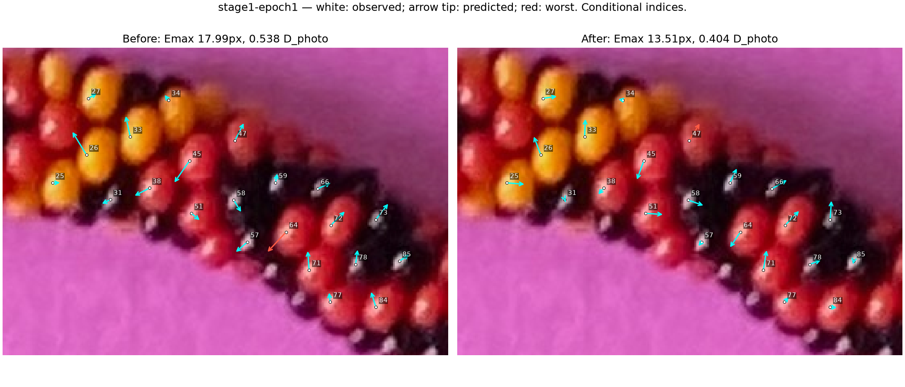
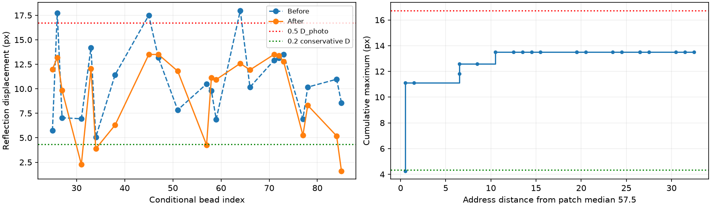
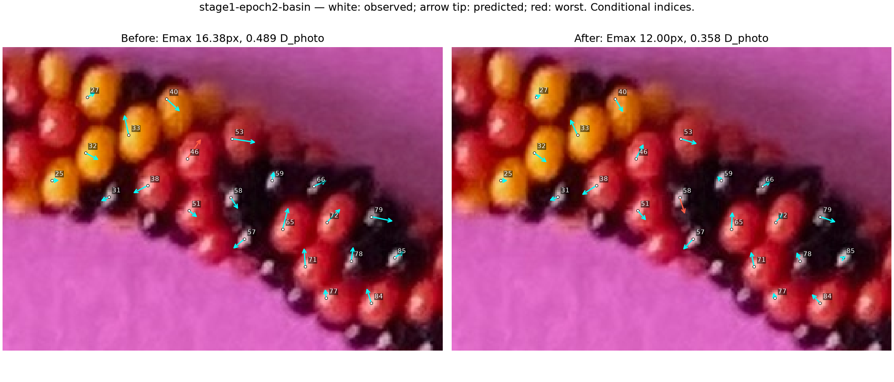
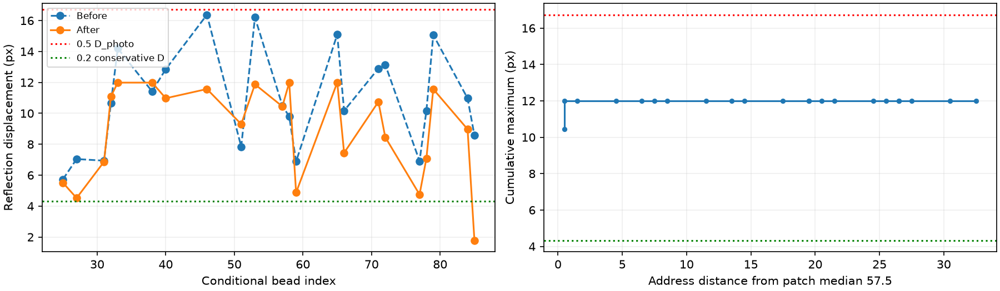

22 provisional correspondences per epoch. Exact maximum is primary. No expansion or adoption.
Report · Full summary · Verification · All excluded observations
Emax 17.992 → 13.505px; RMS 10.306px; missing 0; identities provisional 22/22.
Per-bead CSV · Confidence and alternatives · Unmodified native photo crop


Emax 16.376 → 11.995px; RMS 9.399px; missing 0; identities provisional 22/22.
Per-bead CSV · Confidence and alternatives · Unmodified native photo crop

